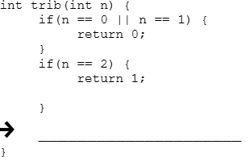
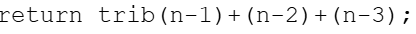
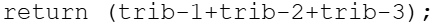
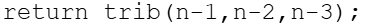
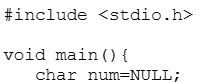
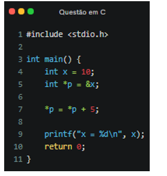

Questões de Linguagem C - Ponteiros
Pergunta 1
Os ponteiros são um dos conceitos mais importantes na linguagem C, permitindo o acesso e manipulação direta dos endereços de memória. Com base no funcionamento dos ponteiros, analise as seguintes afirmações:
- I. Um ponteiro pode armazenar o endereço de qualquer variável do mesmo tipo ao qual ele foi declarado.
- II. O operador & (E comercial) é utilizado para acessar o conteúdo de um ponteiro.
- III. O operador * (asterisco) pode ser usado para declarar um ponteiro e também para acessar o valor armazenado no endereço ao qual ele aponta.
- IV. A aritmética de ponteiros permite incrementar ou decrementar um ponteiro.
Assinale a alternativa correta:
- II e IV, apenas.
- I, III e IV, apenas.
- I e II, apenas.
- III e IV, apenas.
- I, II, III e IV.
Resposta correta: I, III e IV, apenas.
Explicação:
- A afirmativa I é verdadeira.
- A II é falsa porque o operador & pega endereço e não conteúdo.
- A III é verdadeira porque * declara e desreferencia ponteiros.
- A IV é verdadeira devido à aritmética de ponteiros.
Pergunta 2
Considere o trecho de código que apresenta uma função recursiva na linguagem C:

Alternativas:




-
Resposta correta:
return trib(n-1)+trib(n-2)+trib(n-3);Explicação:
A sequência de Tribonacci funciona como Fibonacci, mas soma os três termos anteriores.
F(n) = F(n-1) + F(n-2) + F(n-3)Pergunta 3
Considere o trecho de código da linguagem C abaixo:

Baseado nesse trecho de código, avalie as asserções:
- I. O programa apresenta um warning na declaração do ponteiro.
- II. O ponteiro não pode ter atribuição na declaração.
Resposta correta:
A asserção I é verdadeira, e a II é falsa.
Explicação:
- O warning acontece pela atribuição incorreta envolvendo NULL e char.
- Ponteiros podem sim receber valor na declaração.
Pergunta 4
Observe o código:

Resposta correta:
O programa imprime x = 15.
Explicação:
- O ponteiro p guarda o endereço de x.
- A operação *p = *p + 5 altera diretamente o valor da variável original.
- Logo x passa de 10 para 15.
*p = *p + 5;Pergunta 5
Os ponteiros são variáveis especiais que armazenam endereços de memória. Analise as afirmativas:
- ( ) O operador * é utilizado para declaração e referenciar endereço.
- ( ) O operador & é utilizado para acessar conteúdo armazenado.
- ( ) Apontamento múltiplo ocorre quando um ponteiro aponta para outro ponteiro.
- ( ) Funções podem retornar endereços utilizando ponteiros.
- ( ) Funções podem receber ponteiros como parâmetros.
Alternativas:
- V, F, V, V, V.
- V, F, V, F, F.
- F, F, V, V, V.
- V, F, V, F, V.
- F, V, F, F, F.
Resposta correta:
F, F, V, V, V
Explicação:
- * não referencia endereço. Ele desreferencia.
- & retorna endereço de memória.
- Ponteiro para ponteiro é apontamento múltiplo.
- Funções podem retornar ponteiros.
- Funções podem alterar variáveis usando ponteiros.